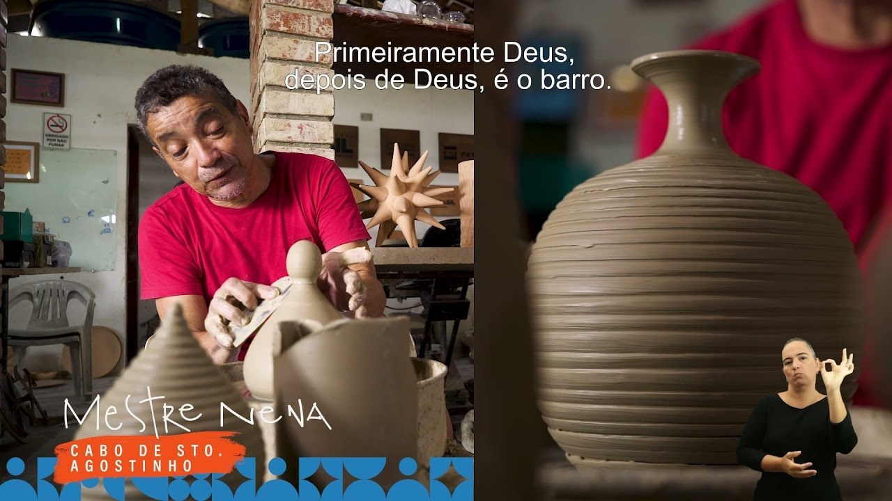
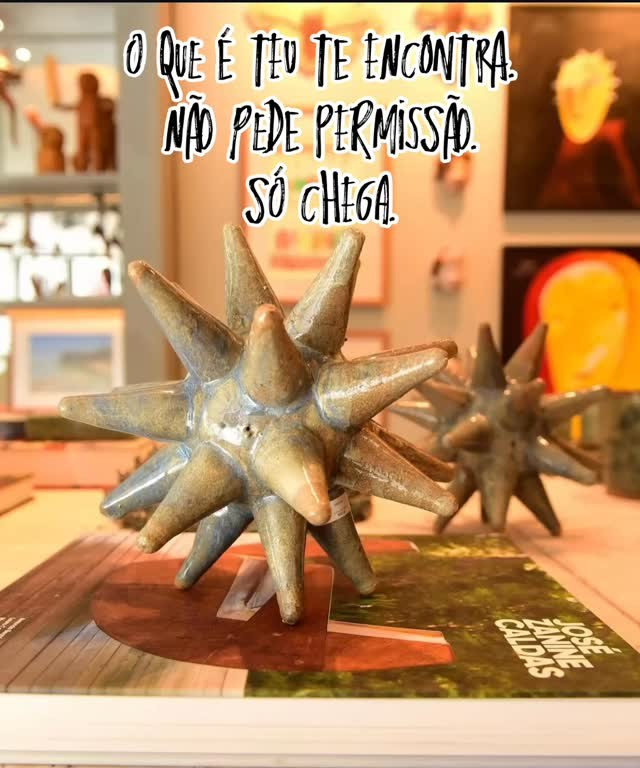
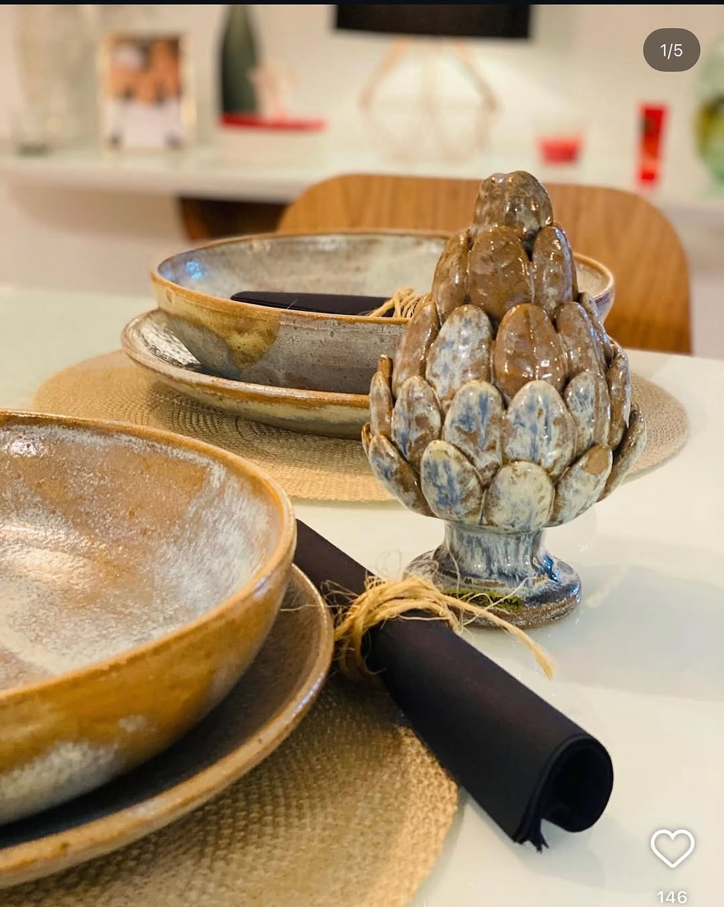
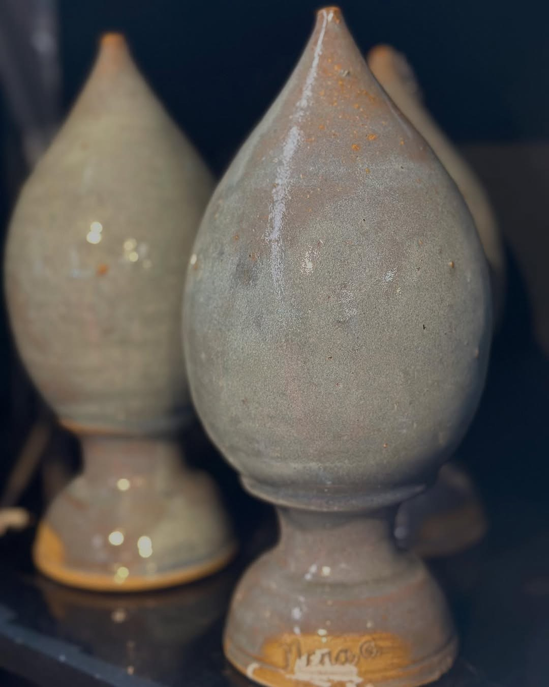

Mestre Nena
Cerâmica vermelha entre tradição, acabamento e invenção contemporânea.
Severino Antônio de Lima, Mestre Nena, é herdeiro da produção cerâmica do Cabo de Santo Agostinho e cria peças que aproximam tradição, utilidade e linguagem contemporânea.
Severino Antônio de Lima nasceu no Cabo de Santo Agostinho, em 1964, e tornou-se herdeiro e zelador da produção cerâmica tradicional do município.
Foi iniciado na cerâmica por Mestre Celé e cresceu dentro do ambiente do ofício, conhecendo desde cedo suas dificuldades, suas formas de fazer e seus encantamentos.
Sua obra valoriza a cerâmica vermelha característica do Cabo, com peças utilitárias e decorativas. Mestre Nena busca qualidade de acabamento e diálogo entre tradição e contemporaneidade.
O barro vermelho do Cabo ganha novas formas sem perder a memória do ofício.
Para observar na peça
- Cor natural da cerâmica
- Acabamento das superfícies
- Equilíbrio entre função e beleza
- Invenções formais dentro da tradição
Materiais e técnica
Galeria de referências de estilo
Imagens públicas reunidas para reconhecer linguagem, materiais e técnica. As peças da exposição são vistas apenas ao vivo.




Fontes e créditos
- Governo de Pernambuco — Mestre Nena | Alameda dos Mestres https://www.youtube.com/watch?v=m4GEOMH_R0E
- Artesol — Mestre Nena https://artesol.org.br/midiateca/mestre-nena/
- Artesol — Mestres da Arte Popular Pernambucana #5 Mestre Nena https://artesol.org.br/midiateca/mestres-da-arte-popular-pernambucana-5-mestre-nena/